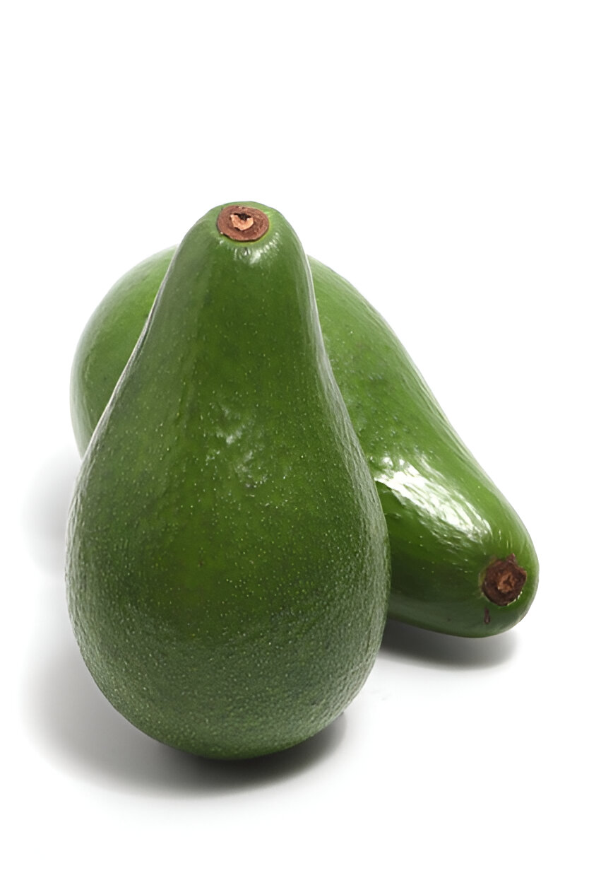

STROBERI

Konsumsi buah stroberi secara teratur dapat membantu menjaga kesehatan jantung dan menurunkan risiko penyakit kardiovaskular.
PISANG

Buah pisang mengandung kalium tinggi, yang membantu menjaga kesehatan jantung dan menstabilkan tekanan darah.
ALPUKAT
Konsumsi alpukat secara rutin dapat membantu menjaga kesehatan kulit, berkat kandungan antioksidan dan vitamin E yang tinggi. Dengan kandungan nutrisi yang lengkap, alpukat juga cocok dikonsumsi sebagai bagian dari diet sehat untuk membantu menurunkan berat badan dan menjaga keseimbangan tubuh.